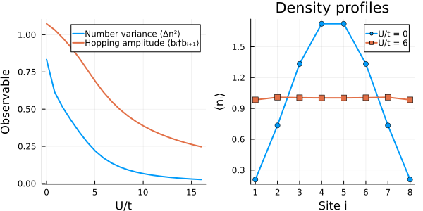

Bosons and the Bose-Hubbard model
This example demonstrates how to define bosonic operators, construct number-conserving Hilbert spaces, and evaluate ground-state observables.
using FermionicHilbertSpaces, Arpack, LinearAlgebra, PlotsBosonic algebra and cutoffs
A single bosonic mode is defined with @boson. Adjoint ' acts as the creation operator, satisfying $[a, a^\dagger] = 1$.
@boson a
a * a' - a' * a == 1true@bosons defines an indexed array of modes. Modes on different sites commute.
@bosons b
b[1]' * b[2] == b[2] * b[1]'trueNumerical calculations require a finite local dimension $d$ (basis $|0\rangle, \dots, |d-1\rangle$). To define a truncated bosonic hilbert space for a mode do
local_dim = 4
Hlocal = hilbert_space(a, local_dim)4-dimensional TruncatedBosonicHilbertSpace
Label: a, dimension: 4For a field of bosons do hilbert_space(b, labels, local_dim).
Fixed-particle-number sector
For a chain of 6 sites at unit filling (6 particles), setting local_dim = Nparticles + 1 avoids truncation error. NumberConservation restricts the space to the target sector.
Nsites = 8
Nparticles = 8
Hfull = hilbert_space(b, 1:Nsites, Nparticles + 1)
H = hilbert_space(b, 1:Nsites, Nparticles + 1, NumberConservation(Nparticles))
dim(Hfull), dim(H) # 43,046,721 -> 6435-dimensional(43046721, 6435)Hamiltonian and operator representations
We set up the Bose-Hubbard Hamiltonian with hopping $t$ and onsite repulsion $U$:
\[H = -t \sum_{i=1}^{N-1} (b_i^\dagger b_{i+1} + \mathrm{h.c.}) + \frac{U}{2} \sum_{i=1}^N n_i(n_i - 1), \qquad n_i = b_i^\dagger b_i.\]
hc adds the Hermitian conjugate. Let's generate the matrix representations once to reuse in sweeps, and define the ground state calculation
n = [b[i]' * b[i] for i in 1:Nsites]
hop_sym = sum(b[i]' * b[i+1] + hc for i in 1:(Nsites-1))
int_sym = sum(n[i] * (n[i] - 1) for i in 1:Nsites)
K = representation(hop_sym, H)
D = representation(int_sym, H)
n_ops = [representation(n[i], H) for i in 1:Nsites]
n2_ops = [representation(n[i]^2, H) for i in 1:Nsites]
hop_ops = [representation(b[i]' * b[i+1], H) for i in 1:(Nsites-1)]
function ground_state(U; t=1.0)
M = -t * K + (U / 2) * D
_, vecs = eigs(M; nev=1, which=:SR)
psi = vecs[:, 1]
density = [real(dot(psi, op, psi)) for op in n_ops]
variance = sum(real(dot(psi, n2, psi)) - d^2 for (n2, d) in zip(n2_ops, density)) / Nsites
hopping = sum(real(dot(psi, op, psi)) for op in hop_ops) / (Nsites - 1)
return (; density, variance, hopping)
endground_state (generic function with 1 method)Interaction sweep
As $U/t$ grows, onsite repulsion suppresses particle fluctuations and hopping. The right panel shows how the open-boundary density profile flattens to 1 particle per site.
Us = range(0, 16; length=20)
sweep = [ground_state(U) for U in Us];
p1 = plot(Us, [res.variance for res in sweep]; label="Number variance ⟨Δn²⟩", lw=2, xlabel="U/t", ylabel="Observable")
plot!(p1, Us, [res.hopping for res in sweep]; label="Hopping amplitude ⟨bᵢ†bᵢ₊₁⟩", lw=2)
p2 = plot(1:Nsites, ground_state(0).density; label="U/t = 0", m=:circle, lw=2,
xlabel="Site i", ylabel="⟨nᵢ⟩", xticks=1:Nsites, title="Density profiles")
plot!(p2, 1:Nsites, ground_state(6).density; label="U/t = 6", m=:square, lw=2)
plot(p1, p2; layout=(1, 2), size=(600, 300))
This page was generated using Literate.jl.